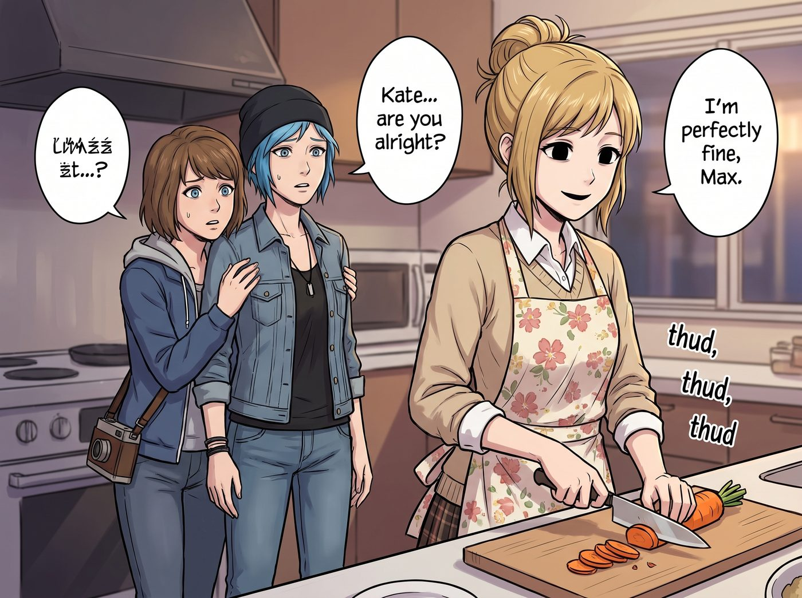

舊約聖經級別的審判

在二號車廂的絕對食物鏈裡，所有人都有一個心照不宣的共識：絕對、絕對不要惹 Kate Marsh 生氣。
Kate 平時展現出的 90% 是純粹的聖母光輝，她會溫柔地包容 Chloe 的粗口，治癒 Max 的精神內耗，甚至能用一個微笑讓高傲的 Victoria 乖乖洗碗。但剩下的那 10%，是經歷過阿卡迪亞灣的生死霸凌後，沉澱下來的一種屬於「舊約聖經級別的腹黑與審判」。
當這 10% 的「神聖憤怒」被觸發，且與實習生 Lily 的「行政黑魔法」結合時，那將是一場沒有硝煙、不見鮮血，卻能讓人靈魂俱滅的聖戰。
一、觸發底線的偽善者
事情發生在西雅圖南區的一家流浪動物與兒童互助中心。Kate 每週三都會去那裡做義工，教自閉症兒童畫畫，並幫忙照顧流浪狗。
然而，一個名為「恩典之光」的大型商業教會看中了那塊地皮。教會的負責人 Grayson 牧師，是一個梳著油頭、開著賓利、滿嘴「繁榮福音」的偽善者。為了逼迫互助中心搬遷，他不僅動用政商關係斷了中心的資助，還在社區裡散佈互助中心「衛生不達標、傳染疾病」的惡意謠言。
當 Kate 試圖去找他講理時，Grayson 牧師只是一邊抽著雪茄，一邊輕蔑地笑著對她說：「小姑娘，上帝只幫助那些懂得幫助自己的人。這塊地是主要用來建豪華靈修中心的，妳的那些流浪狗和窮孩子，不符合我們的『高端信仰受眾』。去別的地方祈禱奇蹟吧。」
那天下午，Kate 回到了二號車廂。
二、聖潔的殺意
Chloe 和 Max 第一時間察覺到了不對勁。
Kate 沒有哭，也沒有抱怨。她只是極度平靜地走進廚房，繫上圍裙，開始切胡蘿蔔。但她下刀的速度和力度，精準、冷酷得像是在執行某種中世紀的斷頭台儀式。「篤、篤、篤」，每一刀都像是剁在某人的頸椎上。
「Kate……妳還好嗎？」Max 躲在 Chloe 身後，小心翼翼地問。
「我非常好，Max。」Kate 轉過頭，露出了一個毫無陰霾、卻完全沒有一絲高光的「絕對純潔微笑」，「我只是突然想起了很久以前，在阿卡迪亞灣的時候。那時候也有人打著『捍衛信仰純潔』的旗號，把我的照片和名字釘在網路上任人踐踏，說我不配談論上帝，說我活該。」
她低頭看著手裡的刀鋒，聲音依然輕柔，卻帶著一絲從未在旁人面前顯露過的鋒利：「我花了很長的時間，才學會分辨——真正的信仰，是拿來安慰受傷的人；而不是拿來當武器，去踐踏比自己弱小的人。Victoria 的傲慢，傷的頂多是我們幾個人的自尊，她從來沒有打著任何神聖的名義去剝削誰。但這位牧師……他在用我最珍視的東西，去傷害那些沒有能力反抗的孩子和動物。這件事，我不能就這樣算了。」
三、大小姐被點名
坐在角落沙發上、原本正戴著耳機聽著財經新聞的 Victoria，在聽到自己的名字被夾在這段殺氣騰騰的獨白裡時，整個人猛地僵住了。
「等等——」Victoria 一把扯掉耳機，臉色瞬間發白，手指已經下意識地摸向了手機，「Kate 剛才是不是……在點名批評我？」
她的腦子飛速運轉，開始瘋狂盤點自己最近有沒有得罪過 Kate——上週嫌棄她的茶太甜？前天說她種的番茄品相不夠優雅？Victoria 越想越慌，指尖已經飛快地在購物 App 上滑動，準備不計成本地連夜下單 Kate 最愛的那套限量法國有機精油萃取器，外加一整車新鮮進口的洋甘菊花苗。
「Kate，」Victoria 難得聲音發虛地站起身，試圖用最快的速度挽回局面，「我知道我最近態度是差了點，但——」
話還沒說完，Kate 已經放下菜刀，快步走過來，張開雙臂，毫無預兆地一把緊緊抱住了 Victoria。
「唔——？！」Victoria 整個人瞬間僵成一塊木板，被這突如其來的擁抱嚇得連呼吸都停了半拍，手裡的手機「啪」地一聲差點滑落在地。
「Victoria，」Kate 靠在她肩上，聲音溫柔得像是什麼都沒發生過，「妳誤會了，我不是在說妳做錯了什麼，只是剛好想到妳的名字，拿來當一個很貼切的對照例子而已。妳放心，我很珍惜妳的。」
Victoria 僵在原地，被抱得渾身不自在，耳根卻悄悄泛起了一層薄紅，過了好幾秒才找回自己的聲音，語氣裡帶著劫後餘生的僵硬與一絲不易察覺的彆扭：「……那妳能不能提前警告一下，別把我的名字用在『舊約聖經級別的審判宣言』裡，老天，我剛才心臟都快跳出來了。」
「下次我會注意的。」Kate 笑瞇瞇地鬆開手，轉身收起了那個裝著限量精油萃取器的購物頁面截圖——顯然是 Chloe 剛才手快，已經在旁邊偷拍下來，準備留著日後調侃。
Victoria 不太自在地重新戴回耳機，卻在角落裡狠狠瞪了 Chloe 一眼，示意她刪掉那張截圖，而 Chloe 只是賊笑著把手機藏得更緊。
四、實習生的狂熱
Kate 放下菜刀，溫柔地擦了擦手，然後走向了正在整理發票的 Lily。
「Lily，我的好妹妹。」Kate 的聲音輕柔得彷彿在唱讚美詩，但內容卻讓旁邊的 Chloe 倒抽了一口冷氣，「請問妳對美國聯邦稅法裡宗教免稅組織的實質性商業活動審查，以及牧師住房補貼免稅額的濫用判定，了解多少？」
只見 Lily 手裡的螢光筆「啪」地一聲掉在了桌上。
實習生慢慢地抬起頭，那雙平時總是乖巧順從的大眼睛裡，瞬間爆發出了宛如狂熱十字軍般的駭人光芒。她平時的黑魔法都是防禦性的，但現在，二號車廂的最高道德領袖，正在親自向她下達「主動攻擊」的神聖授權！
「Kate 學姐，」Lily 激動得聲音都在發抖，她猛地站起身，將那本黑色的筆記本緊緊抱在胸前，宛如捧著聖經，「我了解得如同我的掌紋一樣清晰。您需要我降下怎樣的『天罰』？」
「Grayson 牧師似乎忘記了貪婪是七宗罪之一。」Kate 溫柔地將手搭在 Lily 的肩膀上，笑容無比悲憫，「我們來幫他回憶一下吧。合法地，體面地。」
五、降維打擊的神聖行政絞殺
在接下來的 72 小時裡，Lily 進入了某種不眠不休的「聖戰模式」。
她沒有去駭客攻擊教會的網站，也沒有去搞什麼低級的抹黑。她只是利用開源情報和跨州地產登記庫，對 Grayson 牧師進行了一次顯微鏡級別的行政解剖。
第一天，Lily 透過比對教會的公開募捐財報和私人飛機的航線軌跡，精準鎖定了 Grayson 牧師將超過四成的「慈善捐款」列為「靈修考察費用」，實則用來支付他在拉斯維加斯的高級賭場飯店開銷。
第二天，Lily 調閱了西雅圖的土地分區劃分法。她發現，Grayson 牧師名下的那棟價值五百萬美金的豪宅，一直以「教會辦公集會場所」的名義全額免繳房產稅。但根據 Lily 透過合法無人機航拍獲取的熱成像數據，該建築根本沒有進行過任何超過五人的集會，反而經常在週末舉辦提供高價酒精飲品的私人派對。
第三天，Lily 將這份長達兩百多頁、附帶交叉引用和稅法註釋的檢舉報告，同時發送給了美國國稅局免稅實體審查部、華盛頓州總檢察長辦公室，以及西雅圖最具攻擊性的兩家調查報導媒體。
六、來自天堂的最終慰問
一週後，西雅圖的新聞版面被徹底引爆。
國稅局的查稅員和聯邦探員突擊查封了「恩典之光」教會的財務室。Grayson 牧師不僅面臨免稅資格被永久撤銷的災難，還背上了高達數百萬美元的逃稅指控與欺詐訴訟。那個試圖吞併互助中心的豪華靈修中心建案，自然因為資金凍結而徹底流產。
在 Grayson 牧師被保釋出來，灰頭土臉地在律師陪同下走出法院時，他看到了一個熟悉的身影。
Kate 穿著那件溫柔的米色毛衣，手裡挎著一個小竹籃，安靜地站在台階下。她的身後，站著推著圓框眼鏡、乖巧無比的 Lily。
「Grayson 牧師，聽說您最近遇到了一些世俗的煩惱。」Kate 走上前，將一個裝滿了剛烤好的肉桂捲的紙盒遞給他，笑容依然是那麼純潔無暇，充滿了治癒的光輝。
牧師驚恐地看著眼前這個看似柔弱的女孩，冷汗瞬間浸透了襯衫。他這輩子騙過無數人，但他那遲鈍的直覺終於在此刻發出瘋狂的警報：眼前這個女孩，才是這場毀滅性風暴的真正核心。
「因為掩蓋自己罪過的，必不亨通；承認並離棄罪過的，必蒙憐恤。」Kate 溫柔地幫牧師整理了一下歪掉的領帶，聲音輕得只有他們兩人能聽見，「願您在聯邦監獄裡，能重新找回對主的敬畏。肉桂捲趁熱吃哦。」
說完，Kate 轉過身，牽起 Lily 的手，像什麼都沒發生過一樣，有說有笑地朝著停在遠處的皮卡走去。
坐在皮卡駕駛座上的 Chloe，和副駕駛上的 Max，全程目睹了這場從頭到尾不見一滴血的「聖母處刑」。
當 Kate 帶著那股溫柔的香草味坐進車廂時，Chloe 嚥了一口口水，雙手緊緊握著方向盤，連大氣都不敢喘一口。
「Max……」Chloe 用極其微弱的氣音說道，「我這輩子就算去搶銀行，也絕對不會在 Kate 面前說一句髒話，或者浪費一粒米。」
Max 默默地把相機收進包裡，絕望地閉上了眼睛：「這還用妳說嗎？我現在連呼吸都覺得自己需要先申請一份環保合規許可。惹了 Lily，妳頂多破產；惹了 Kate……她會讓妳在破產的同時，還對她感恩戴德。」